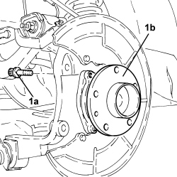
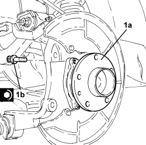
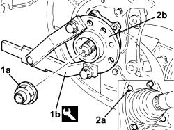

4450D10 HUB FOR ONE REAR WHEEL, L/H OR R/H - R+R WITH WHEEL REMOVED - CHECK WHEEL GEOMETRY SEPARATELY
- Path
- Procedures > 44 SUSPENSION AND WHEELS > 4450 HUBS AND WHEELS > 4450D REAR WHEEL HUBS > 4450D10 HUB FOR ONE REAR WHEEL, L/H OR R/H - R+R WITH WHEEL REMOVED - CHECK WHEEL GEOMETRY SEPARATELY
- Kind
- repair procedure (removal / refitting; the operation number is the code)
- Applies to
- all engines; all production periods
- Interactive page
- https://sloeber94.github.io/elrnDB/alfa/159/en/#/939010865
Applies to: engines: 1.8, 1.9 JTS, 2.2 JTS, 1.9 JTD 8V, 1.9 JTD 16V, 2.4 JTD 20V; all production periods
 Removing
Removing
 Refitting
Refitting- Position the vehicle on a lift.
Op. 4450B08 RIGHT REAR WHEEL - R.R
Op. 3310B57 REAR BRAKE CALIPER BRACKET (ONE), LEFT OR RIGHT - R.R.
Op. 3310B48 REAR BRAKE DISC (ONE), LEFT OR RIGHT - R.R.
1. Unscrew bolts (1a) and remove the rear wheel hub (1b).

Applies to: engines: 1.8, 1.9 JTS, 2.2 JTS, 1.9 JTD 8V, 1.9 JTD 16V, 2.4 JTD 20V; all production periods
Refitting
Removing1. Place the rear wheel hub (1a) in its housing and secure it tightening the bolts (1b) to the recommended torque.
Component | Fastening | dia | Value (daNm) | Validity |
|---|---|---|---|---|
Rear wheel hub | Bolt | M12 | (steering knuckle side) 5.9 - 7.2 | 1.9 JTS 2.2 JTS 1.9 JTD 8V 1.9 JTD 16V 2.4 JTD 20V |

Applies to: engines: 1.8, 1.9 JTS, 2.2 JTS, 1.9 JTD 8V, 1.9 JTD 16V, 2.4 JTD 20V; all production periods
Op. 3310B48 REAR BRAKE DISC (ONE), LEFT OR RIGHT - R.R.
Op. 3310B57 REAR BRAKE CALIPER BRACKET (ONE), LEFT OR RIGHT - R.R.
Op. 4450B08 RIGHT REAR WHEEL - R.R
- Remove the vehicle from the lift.
Applies to: engines: 3.2 JTS; all production periods
Removing
Refitting